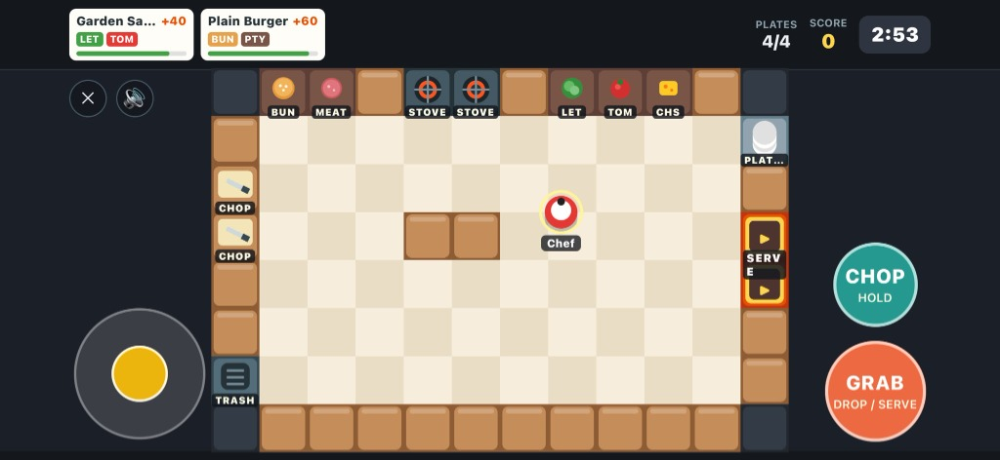

A 2D multiplayer cooperative cooking game where every shared kitchen bottleneck is solved with hand-rolled concurrency primitives and a raw TCP socket server in plain Java.

CHOP & GRAB/DROP.
1 to 4 players join a room with a 4-letter code (e.g. K4M2), choose a 90s demo or 180s shift, and coordinate on a compact 12×8 top-down grid with a central prep island.
| Station | Rule | Output |
|---|---|---|
| Ingredient Crates (5) | Infinite supply (BUN, MEAT, LET, TOM, CHS) |
Raw item (or ready BUN) |
| Chopping Board (×2) | Hold CHOP for 2.0s total |
CHOPPED_* / SLICED_CHEESE |
| Stove (×2) | Auto-cooks via 20 Hz tick: 0–4s raw, 4–9s ready, >9s burnt |
COOKED_PATTY / BURNT_PATTY |
| Counters & Plating | Bidirectional combine: plate-on-item or item-on-plate | Assembled plated dish |
| Serving Window / Trash | Serve matches oldest order; Trash empties plate safely | Score + plate to Dishwasher |
+20 pts with >60% time left; +10 pts with >30% left.+10 × min(combo, 3).150+ · ★★ 320+ · ★★★ 500+ (0.5× for 90s demo).−20 pts and combo resets to 0.−10 pts, combo resets, plate still goes to dishwasher.
JDK 21 stdlib only (java.lang, java.io, java.net, java.util) built with plain javac/Makefile. No Spring, Netty, WebSocket, or Gson — custom MiniJson.java.
java.util.concurrent.*
No ReentrantLock, Semaphore, BlockingQueue, ConcurrentHashMap, ExecutorService, or Atomic*. Every primitive is built from scratch in undercooked.concurrency.
Mirrors lecture4-2.pdf slides 45–50: raw ServerSocket(6789) spawning explicit ClientHandlerThread per socket, plus 4 explicit room worker threads.
e2-small (Ubuntu 24.04, static IP, TCP 6789 firewall, systemd) — classmates join directly from phones.
public void serveForever() throws IOException { this.welcomeSocket = new ServerSocket(requestedPort); // :6789 while (running) { Socket sock = welcomeSocket.accept(); // blocks until SYN ClientConnection conn = new ClientConnection(id, sock); clientsMutex.P(); try { activeClients.add(conn); } finally { clientsMutex.V(); } // Explicit java.lang.Thread per client (no thread pool) new ClientHandlerThread(conn, this).start(); } }
socket.setTcpNoDelay(true); // Disable Nagle for low-latency moves reader = new BufferedReader(new InputStreamReader(sock.getInputStream(), UTF_8)); writer = new BufferedWriter(new OutputStreamWriter(sock.getOutputStream(), UTF_8)); public boolean sendLine(String jsonLine) { writeMutex.P(); // Prevents interleaved bytes from Broadcaster & Handler try { writer.write(jsonLine); writer.write('\n'); writer.flush(); return true; } finally { writeMutex.V(); } }
import TcpSocket from 'react-native-tcp-socket'; connect(host: string, port: number): void { const sock = TcpSocket.createConnection({ host, port }, () => { this.isConnected = true; this.notifyStatus(true); }); sock.on('data', (chunk) => { this.rxBuffer += chunk.toString('utf8'); const lines = this.rxBuffer.split('\n'); // Preserve trailing incomplete TCP fragment for next packet this.rxBuffer = lines.pop() ?? ''; for (const line of lines) { if (!line.trim()) continue; const msg = JSON.parse(line) as ServerMessage; this.messageListeners.forEach(fn => fn(msg)); } }); } send(msg: ClientMessage): boolean { this.socket.write(JSON.stringify(msg) + '\n', 'utf8'); return true; }
\n Framing? Raw TCP is an unframed byte stream — one data event may carry half a JSON object or three snapshots coalesced together.
Zero HTTP / Zero WebSocket Overhead
| Direction | Message type |
Purpose |
|---|---|---|
| C → S | HELLO, CREATE_ROOM, JOIN_ROOM |
Nickname & room registry lookup |
| C → S | SET_READY, START_GAME |
Wakes workers via RoomStateMonitor |
| C → S | MOVE, INTERACT, CHOP |
20 Hz input, grab/drop/plate/serve |
| S → C | WELCOME, LOBBY_STATE, GAME_START |
Seat assignment & static 12×8 map |
| S → C | STATE_SNAPSHOT (20 Hz) |
Lamport seq, chefs, stations, orders, plates |
| S → C | GAME_EVENT, GAME_OVER |
Audio cues, score popups, star rating |
// Client → Server (joystick + grab) {"type":"MOVE","dx":0.85,"dy":0.0,"facing":"E"}\n {"type":"INTERACT"}\n // Server → Client (authoritative snapshot with Lamport clock seq) {"type":"STATE_SNAPSHOT","seq":412,"score":180,"cleanPlates":3,"orders":[...]}\n
Every thread interacting with stations gets a fixed integer pid ∈ [0..5], enabling Lamport's Bakery without dynamic thread ID issues.
dirtyPlates.P(), washes 4s, returns clean plateemptySlots.P() at 5/5BoundedBuffer(64) so slow sockets never stall simulation| ID | Gameplay Scenario | Concurrency Hazard | Hand-Rolled Primitive | Lecture Ref |
|---|---|---|---|---|
| C1 | Concurrent Mobile Clients | Blocking single-thread accept() |
ServerSocket + explicit Threads |
lecture4-2 p.45–50 |
| C2 | Contested Stove / Chop Board | Read-Modify-Write item duplication | BakeryLock(6) + volatile wrappers |
lecture2 p.31–33 |
| C3 | Order Board Capacity (Max 5) | Unbounded growth / busy waiting | CountingSemaphore(5) + BinarySemaphore |
lecture3 p.14–20 |
| C4 | Simultaneous Serve / Expiry | Check-then-Act double scoring | Atomic transaction on orderMutex |
lecture3 p.62–67 |
| C5 | Shared 4 Plates & Dishwasher | Plate leaks / polling CPU burn | CountingSemaphore(0) event ordering |
lecture3 p.8–12 |
| C6 | Player ↔ Station Plating/Swap | Circular Wait Deadlock | ResourceLocker ascending resourceId |
lecture4-1 p.9, 15 |
| C7 | 20 Hz Broadcast Fan-Out | Slow socket stalls sim / torn JSON | BoundedBuffer<String>(64) + writeMutex |
lecture3 p.15–20 |
| C8 | World Snapshot vs. Mutations | Torn reads / writer starvation | Writer-fair ReadersWritersLock |
lecture3 p.21–24 |
| C9 | Lobby Ready / Shift Lifecycle | Spin-waiting & spurious wakeups | RoomStateMonitor (while+notifyAll) |
lecture3 p.38–58 |
| C10 | Global Room Create / Join | Seat overflow / duplicate room code | RoomRegistry + BinarySemaphore & HWMutex |
lecture2 p.41, lec3 |
PetersonLock (2-thread software mutex), TestAndSet / HWMutex (ID generation), ListQueue<T> (Java Monitor queue), and LamportClock (lecture5-2 / lecture10 monotonic snapshot ordering).
BakeryLockprivate static final class VolatileBool { volatile boolean value; } private static final class VolatileInt { volatile int value; } public void requestCS(int pid) { // Step 1: Doorway — take ticket > all visible tickets choosing[pid].value = true; int max = 0; for (int j = 0; j < numThreads; j++) max = Math.max(max, number[j].value); number[pid].value = 1 + max; choosing[pid].value = false; // Step 2: Wait for every j with smaller (number[j], j) for (int j = 0; j < numThreads; j++) { if (j == pid) continue; while (choosing[j].value) Thread.yield(); while (true) { int numJ = number[j].value, numP = number[pid].value; if (numJ != 0 && (numJ < numP || (numJ == numP && j < pid))) Thread.yield(); else break; } } } public void releaseCS(int pid) { number[pid].value = 0; }
Chef 0 and Chef 1 stand next to Stove #0 (holding 1 COOKED_PATTY) and tap GRAB at the exact same millisecond. Without exclusion, both read the patty → item duplication!
(ticket, pid) — no chef can be starved at a busy stove.0), the next ticket resets cleanly to 1.
In Java, volatile int[] makes only the array reference volatile — not its elements! Wrapping each slot in VolatileInt/VolatileBool guarantees happens-before visibility on multi-core CPUs with zero j.u.c.atomic.
public static <T> T callWithOrderedLocks( int pid, LockableResource a, LockableResource b, Action<T> act) { // Always lock smaller resourceId first → breaks Circular Wait LockableResource first = (a.getResourceId() < b.getResourceId()) ? a : b; LockableResource second = (a.getResourceId() < b.getResourceId()) ? b : a; first.getLock().requestCS(pid); try { second.getLock().requestCS(pid); try { return act.execute(); } finally { second.getLock().releaseCS(pid); } } finally { first.getLock().releaseCS(pid); } }
ResourceLocker.withOrderedLocks(pid, player, station, () -> { performInteractionLocked(player, station, pendingEvents); // atomic hand ↔ station });
If a circular wait existed, resource IDs around the cycle would satisfy id₁ < id₂ < … < id₁ — impossible. Verified under opposing (a,b) vs. (b,a) transfer stress tests with 0 deadlocks.
BoundedBuffer<T>private final BinarySemaphore mutex = new BinarySemaphore(true); private final CountingSemaphore emptySlots; // initially capacity private final CountingSemaphore filledSlots; // initially 0 public void deposit(T item) { emptySlots.P(); // 1. Wait for free slot FIRST (no mutex held!) mutex.P(); // 2. Enter circular buffer CS try { buffer[inBuf] = item; inBuf = (inBuf + 1) % capacity; count++; } finally { mutex.V(); } filledSlots.V(); // 3. Wake blocked consumer } public T fetch() { filledSlots.P(); // 1. Wait for available item FIRST mutex.P(); try { T item = (T) buffer[outBuf]; buffer[outBuf] = null; outBuf = (outBuf + 1) % capacity; count--; return item; } finally { mutex.V(); emptySlots.V(); } }
public synchronized void P() { while (value == 0) Util.myWait(this); // while, never if! value--; } public synchronized void V() { value++; notifyAll(); // safer than notify() under interrupts }
Swapping to mutex.P() before emptySlots.P() causes instant deadlock when full: Producer sleeps holding mutex, so Consumer can never enter to free a slot!
GameTickThread from slow mobile TCP writes drained by RoomBroadcasterThread.OrderGeneratorThread on emptySlots.P() with 0% CPU when 5 orders are active.public ServeResult tryCompleteOrder(Item dish, long now) { Recipe target = Recipe.matchPlate(dish); boolean freedSlot = false; orderMutex.P(); // Same mutex used by expireOverdueOrders()! try { Order match = findOldestActive(target, now); if (match != null) { match.markCompleted(); activeOrders.remove(match); freedSlot = true; score += target.getBasePoints() + speedBonus + comboBonus; combo++; } else { score = Math.max(0, score - WRONG_DISH_PENALTY); combo = 0; } } finally { orderMutex.V(); } if (freedSlot) emptySlots.V(); // Wake OrderGenerator return result; }
COMPLETED or EXPIRED) — never both, never twice.
private final BinarySemaphore plateMutex = new BinarySemaphore(true); private CountingSemaphore dirtyPlates = new CountingSemaphore(0); // Non-blocking grab so TCP thread never freezes when 0 clean public boolean tryTakeCleanPlate() { plateMutex.P(); try { if (cleanPlates <= 0) return false; // → sends TOAST cleanPlates--; return true; } finally { plateMutex.V(); } } // Serving Window signals DishwasherThread (Event Ordering) public void submitDirtyPlate() { plateMutex.P(); try { washingPlates++; } finally { plateMutex.V(); } dirtyPlates.V(); // Wakes sleeping DishwasherThread } // Executed ONLY by DishwasherThread (holding 0 other locks) public void washOnePlateBlocking(long ms) throws InterruptedException { dirtyPlates.PInterruptible(); // 0% CPU until dirty plate Thread.sleep(ms); // 4000ms wash cycle plateMutex.P(); try { washingPlates--; cleanPlates++; } finally { plateMutex.V(); } }
dispenser + inHands/counters + washing == 4 always.
ReadersWritersLock, Monitors & Logical Clocksprivate int activeReaders = 0; private boolean activeWriter = false; private int waitingWriters = 0; public synchronized void startRead() { // Fixes lecture3 p.23–24 writer starvation flaw! while (activeWriter || waitingWriters > 0) Util.myWait(this); activeReaders++; } public synchronized void endRead() { activeReaders--; if (activeReaders == 0) notifyAll(); } public synchronized void startWrite() { waitingWriters++; try { while (activeWriter || activeReaders > 0) Util.myWait(this); activeWriter = true; } finally { waitingWriters--; } } public synchronized void endWrite() { activeWriter = false; notifyAll(); }
public synchronized boolean waitUntilPlaying() throws InterruptedException { // Strict while-loop protects against spurious wakeups while (state == State.WAITING || state == State.FINISHED) { wait(); } return state == State.PLAYING; } public synchronized void transitionTo(State next) { this.state = next; notifyAll(); // Wakes Tick, OrderGen, Dishwasher together }
public class LamportClock { private long time = 0; public synchronized long tick() { return ++time; } public synchronized long update(long recv) { time = Math.max(time, recv) + 1; return time; } }
STATE_SNAPSHOT & GAME_EVENT carries a strictly monotonic Lamport seq for total causal ordering.
A thread holding a lock at Level k may only acquire a lock at Level > k (or strictly higher resourceId within Level 2). No downward edges exist anywhere in the codebase.
Blocking condition semaphores are only called by dedicated background threads while holding zero other locks:
emptySlots.P() → OrderGeneratorThread onlydirtyPlates.P() → DishwasherThread onlyfilledSlots.P() → RoomBroadcasterThread only
ClientHandlerThreads never block on condition semaphores; they execute bounded critical sections and return immediately — keeping gameplay responsive under contention.
PetersonLock (100k), BakeryLock (120k), HWMutex (120k), BinarySem (120k), LamportClock (60k), + opposing ResourceLocker transfers (400 conserved, 0 deadlocks).
CountingSem(4) across 8 threads capped at max=4. ListQueue monitor delivered 32,000 items.
maxConcurrentReaders ≥ 4), zero torn multi-field reads, and zero writer starvation under continuous read pressure.
BURGER across 300 rounds → strictly 1 winner/round. Simultaneous serve vs. expiry across 200 rounds → 0 double outcomes. Confirmed producer block at 5/5.
COOKED_PATTY on Stove #0 across 400 rounds → strictly 1 pickup, 0 duplications. PlatePool + Dishwasher conserved 4/4 plates across 160 serves.
java.net.Socket clients across 2 rooms performing lobby ready, start, concurrent MOVE/INTERACT/CHOP, monotonic seq snapshots, and 0 leaked connections.
$ cd server && make test Checking CMPE 436 hard constraints (zero java.util.concurrent.*)... OK: Zero java.util.concurrent imports found. [PASS] MutexStressTest [PASS] BoundedBufferStressTest [PASS] ReadersWritersStressTest [PASS] DuplicateOrderRaceTest [PASS] StationContentionTest [PASS] TcpLoadTest — ALL 6 SUITES PASSED
Watch BakeryLock, OrderBoard, PlatePool, and RoomStateMonitor fire live in the server console while chefs compete in the same kitchen over raw TCP.
Launch the plain-Java server JAR with --log-concurrency to stream lock acquisitions and semaphore wakes.
Enter GCP static IP + port 6789 on Android APK / iOS, join the same 4-letter room code, toggle Ready, and start a 90s shift.
Grab the same cooked patty together, race to serve the last burger, and drain all 4 clean plates to watch DishwasherThread recover!
$ java -jar server/dist/undercooked-server.jar 6789 --log-concurrency [ROOM_MONITOR] State transition WAITING -> PLAYING (notifyAll) [BAKERY] Slot 0 requesting ordered locks Player#0 -> Station#14 (STOVE) [ORDER_BOARD] Atomic complete Order#3 (BURGER) +80 pts [PLATE_POOL] Dirty plate submitted -> dirtyPlates.V() (washing=1)